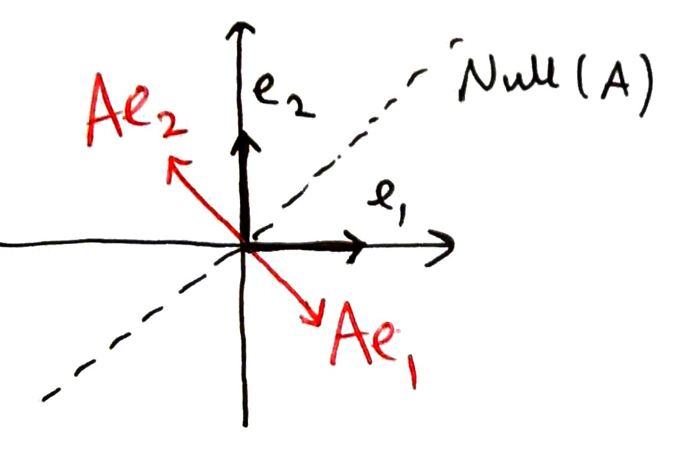
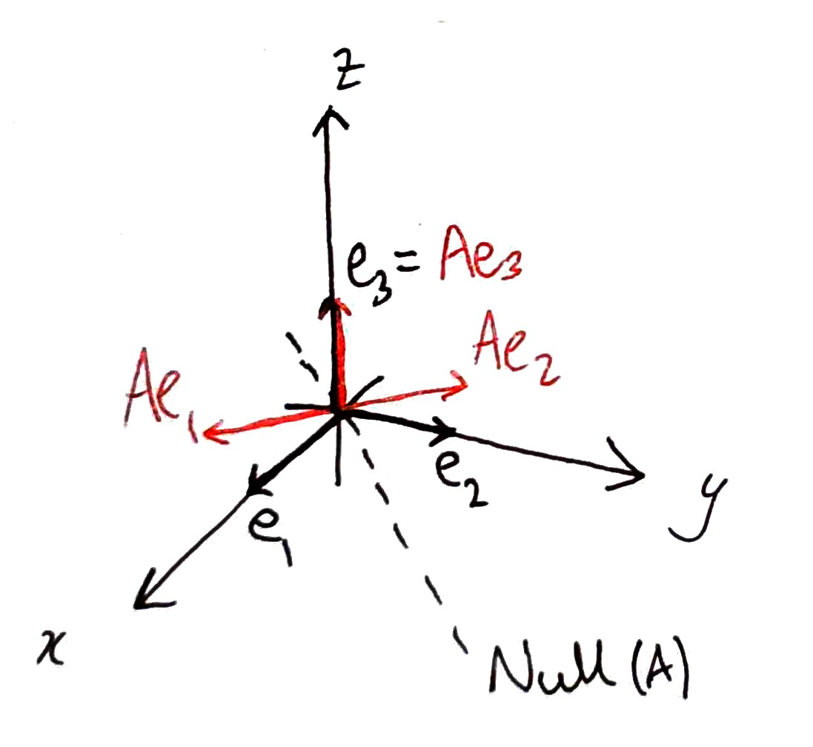
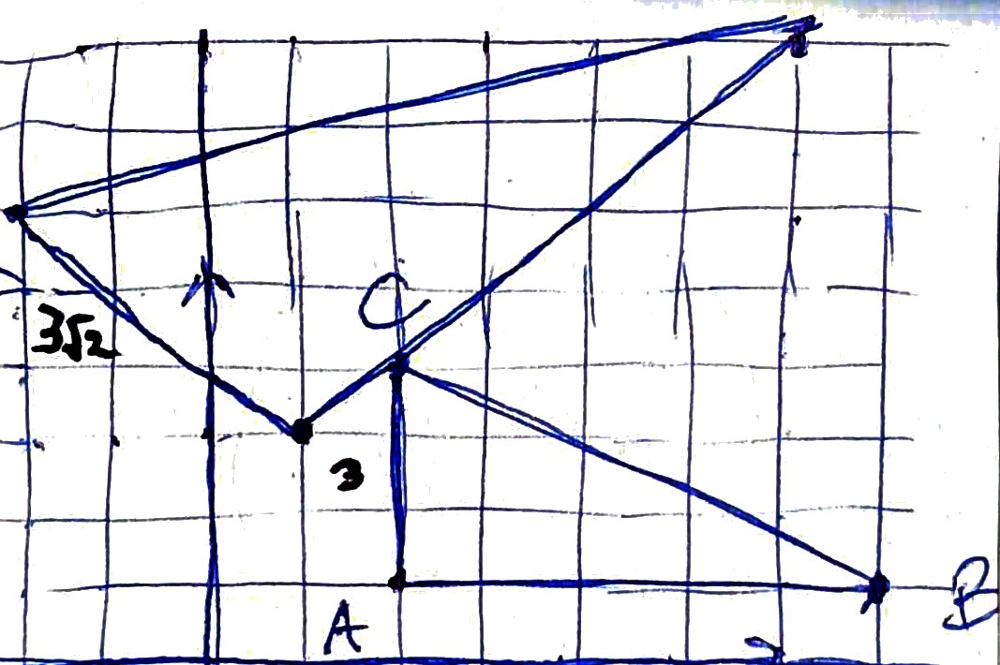
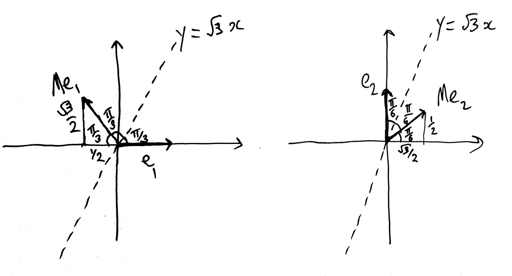
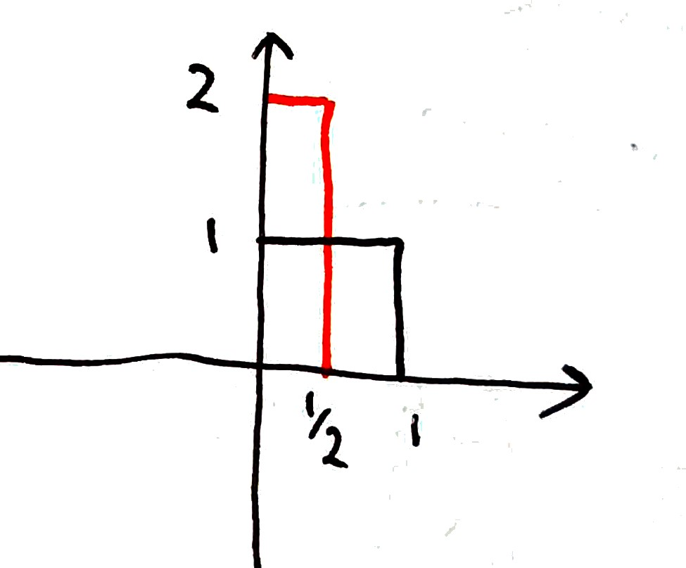

Linear Algebra Answers 2
Question 1
We will prove that \(T\) and \(S\circ T\) are linear transformations, but \(S\) is not.
To prove that \(T\) is a linear transformation, let \(x, y \in \mathbb{R}^2\) where
\[\begin{split}x = \begin{pmatrix}x_1\\x_2\end{pmatrix}, y = \begin{pmatrix}y_1\\y_2\end{pmatrix}.\end{split}\]
Then
\[\begin{split}
\begin{align*}T(x+y) &= T\left(\begin{pmatrix}x_1\\x_2\end{pmatrix}+\begin{pmatrix}y_1\\ y_2\end{pmatrix}\right) = T\left(\begin{pmatrix}x_1+y_1\\x_2+y_2\end{pmatrix}\right)\\
&=\begin{pmatrix}2(x_1+y_1)+x_2+y_2\\0\end{pmatrix}=\begin{pmatrix}2x_1+x_2\\0\end{pmatrix} + \begin{pmatrix}2y_1+y_2\\0\end{pmatrix}\\
&= T(x) + T(y).
\end{align*}\end{split}\]
Next, for any \(a\in \mathbb{R}\),
\[\begin{split}
\begin{align*}
T(ax) &= T\left(a\begin{pmatrix}x_1\\x_2\end{pmatrix}\right)=T\left(\begin{pmatrix}ax_1\\ax_2\end{pmatrix}\right)\\
&=\begin{pmatrix}2ax_1+ax_2\\0\end{pmatrix}=a\begin{pmatrix}2x_1+x_2\\0\end{pmatrix}\\
&=aT(x).
\end{align*}\end{split}\]
To prove that \(S\) is not a linear transformation, it is sufficient to find two vectors \(u\) and \(v\) such that
\[S(u + v) \neq S(u) + S(v).\]
Let
\[\begin{split}u = \begin{pmatrix}1\\0\end{pmatrix}, v=\begin{pmatrix}0\\1\end{pmatrix},\end{split}\]
then
\[\begin{split}S(u+v) = S\left(\begin{pmatrix}1\\0\end{pmatrix}+\begin{pmatrix}0\\1\end{pmatrix}\right)=S\left(\begin{pmatrix}1\\1\end{pmatrix}\right)=\begin{pmatrix}2\\1\end{pmatrix}\end{split}\]
and
\[\begin{split}S(u) + S(v) = S\left(\begin{pmatrix}1\\0\end{pmatrix}\right)+S\left(\begin{pmatrix}0\\1\end{pmatrix}\right)=\begin{pmatrix}1\\0\end{pmatrix}+\begin{pmatrix}1\\0\end{pmatrix}=\begin{pmatrix}2\\0\end{pmatrix}.\end{split}\]
Therefore
\[S(u+v)\neq S(u)+S(v).\]
To prove that \(S\circ T\) is linear, let
\[\begin{split}x = \begin{pmatrix}x_1\\x_2\end{pmatrix}.\end{split}\]
\[\begin{split}S\circ T(x) = S\left(T\left(\begin{pmatrix}x_1\\x_2\end{pmatrix}\right)\right) = S\left(\begin{pmatrix}2x_1+x_2\\0\end{pmatrix}\right)=\begin{pmatrix}2x_1+x_2\\0\end{pmatrix}=T(x).\end{split}\]
Therefore, \(S \circ T = T\). We have already shown that \(T\) is a linear transformation, therefore \(S \circ T\) is a linear transformation.
Question 2
1. Reducing \(A\) to reduced row echelon form,
\[\begin{split}\begin{pmatrix}1&-1\\0&0\end{pmatrix},\end{split}\]
we find that the null space of \(A\) is \(t\begin{pmatrix}1\\1\end{pmatrix}, t\in \mathbb{R}\).
The images of the coordinate vectors under the transformation \(x \mapsto Ax\) are:
\[\begin{split}
Ae_1 = \begin{pmatrix}1/\sqrt{2}\\-1/\sqrt{2}\end{pmatrix}, Ae_2 = \begin{pmatrix}-1/\sqrt{2}\\1/\sqrt{2}\end{pmatrix}
\end{split}\]

\(A\) represents a projection onto the line \(x_1=-x_2\) followed by a stretch \(\times \sqrt{2}\) along the line \(x_1 = -x_2\).
Alternatively, \(A\) represents a dilation (equal stretch in all directions) by \(\sqrt{2}\) follwed by a projection onto the line \(x_1=-x_2\).
2. Reducing \(A\) to reduced row echelon form,
\[\begin{split}\begin{pmatrix}1&-1&0\\0&0&1\\0&0&0\end{pmatrix},\end{split}\]
we find that the null space of \(A\) is \(t\begin{pmatrix}1\\1\\0\end{pmatrix}, t\in \mathbb{R}\).
\[\begin{split}
Ae_1 = \begin{pmatrix}1/\sqrt{2}\\-1/\sqrt{2}\\0\end{pmatrix}, Ae_2 = \begin{pmatrix}-1/\sqrt{2}\\1/\sqrt{2}\\0\end{pmatrix}, Ae_3 = \begin{pmatrix}0\\0\\1\end{pmatrix}
\end{split}\]

\(A\) represents a projection onto the plane \(t_1\begin{pmatrix}1\\-1\\0\end{pmatrix} + t_2\begin{pmatrix}0\\0\\1\end{pmatrix}\) followed by a stretch \(\times \sqrt{2}\) along the line \(t_1\begin{pmatrix}1\\-1\\0\end{pmatrix}\).
Question 3

M represents an anticlockwise rotation \(\pi/4\) followed by a scaling (dilation) \(\times \sqrt{2}\).
Question 4
Using the special triangles with sides \(1, 1/2, \sqrt{3}/2\) and internal angles \(\pi/2, \pi/3, \pi/6\) as in the image below,

or using the formula in the notes
\(M=\left(\begin{array}{cc}\cos{2\theta}&\sin{2\theta}\\ \sin{2\theta}&-\cos{2\theta}\end{array}\right)\) with \(\theta=\tan^{-1}{\sqrt{3}}=\frac{\pi}{3}\)
gives
\[\begin{split}M=\frac{1}{2}\left(\begin{array}{cc}-1&\sqrt{3}\\ \sqrt{3}&1\end{array}\right).\end{split}\]
\[\det{M}=\left(\frac{1}{2}\right)^2(-1-3)=-1\]
so
\[\begin{split}M^{-1}=-\frac{1}{2}\left(\begin{array}{cc}1&-\sqrt{3}\\ -\sqrt{3}&-1\end{array}\right)\end{split}\]
\[T=NM\]
(transform \(M\) is applied first).
Therefore
\[\begin{split}N=TM^{-1}=\frac{1}{4}\left(\begin{array}{cc}-1+2\sqrt{3} & 2+\sqrt{3}\\ \sqrt{3} & 1\end{array}\right)\left(\begin{array}{cc}-1&\sqrt{3}\\ \sqrt{3}&1\end{array}\right)\end{split}\]
\[\begin{split}=\frac{1}{4}\left(\begin{array}{cc}1-2\sqrt{3}+2\sqrt{3} & -\sqrt{3}+6+2+\sqrt{3}\\-\sqrt{3}+\sqrt{3} & 3+1\end{array}\right)\end{split}\]
\[\begin{split}=\left(\begin{array}{cc}1&2\\0&1\end{array}\right)\end{split}\]
This is a shear parallel to the x-axis, scale factor 2.
Question 5
A vector \(x\) is invariant under the transformation \(x \mapsto Ax\) if it satisfies the equation
\[Ax = x.\]
(Alternatively, we say that \(A\) ‘fixes’ \(x\)).
This equation is not of the form \(Ax = b\) since \(x\) appears on both sides of the equation. We need to rearrange and factorise the equation to get \(x\) on its own.
\[Ax - x = 0.\]
we are not allowed to write \((A-1)x = 0\) since we cannot subtract a number from a matrix. Instead, use the identity matrix:
\[Ax - Ix = (A-I)x = 0.\]
We just need to find the null space of the matrix \(A-I\).
\[\begin{split}A - I = \frac{1}{2}\begin{pmatrix}-3&\sqrt{3}\\\sqrt{3}&-1\end{pmatrix}.\end{split}\]
Reducing to echelon form:
\[\begin{split}\begin{pmatrix}1&-\frac{1}{\sqrt{3}}\\0&0\end{pmatrix}.\end{split}\]
The values of \(x\) invariant under \(x \mapsto Ax\) is the null space of \(A-I\) which is \(t\begin{pmatrix}\frac{1}{\sqrt{3}} \\1\end{pmatrix}, t \in \mathbb{R}\).
The matrix represents a reflection in the line \(y = \sqrt{3}x\).
Question 6
Let \(A\) be the matrix representing the linear transformation \(T\).
Then
()\[\begin{split}A\begin{pmatrix}1\\1\\1\end{pmatrix} = \begin{pmatrix}1\\0\\1\end{pmatrix}, A\begin{pmatrix}2\\3\\5\end{pmatrix} = \begin{pmatrix}0\\2\\1\end{pmatrix}, A\begin{pmatrix}0\\1\\2\end{pmatrix} = \begin{pmatrix}1\\0\\0\end{pmatrix}.\end{split}\]
Method 1
Writing
\[\begin{split}A = \begin{pmatrix}a_{11}&a_{12}&a_{13}\\a_{21}&a_{22}&a_{23}\\a_{31}&a_{32}&a_{33}\end{pmatrix}\end{split}\]
We have three linear equations for each of the matrix equations above:
\[\begin{split}
\begin{align*}
a_{11} + a_{12} + a_{13} &= 1\\
a_{21} + a_{22} + a_{23} &= 0\\
a_{31} + a_{32} + a_{33} &= 1\\
\\
2a_{11} + 3a_{12} + 5a_{13} &= 0\\
2a_{21} + 3a_{22} + 5a_{23} &= 2\\
2a_{31} + 3a_{32} + 5a_{33} &= 1\\
\\
a_{12} + 2a_{13} &= 1\\
a_{22} + 2a_{23} &= 0\\
a_{32} + 2a_{33} &= 0\\
\end{align*}
\end{split}\]
By regrouping equations we arrive at 3 sets of simultaneous equations:
\[\begin{split}
\begin{align*}
a_{11} + a_{12} + a_{13} &= 1\\
2a_{11} + 3a_{12} + 5a_{13} &= 0\\
a_{12} + 2a_{13} &= 1\\
\\
a_{21} + a_{22} + a_{23} &= 0\\
2a_{21} + 3a_{22} + 5a_{23} &= 2\\
a_{22} + 2a_{23} &= 0\\
\\
a_{31} + a_{32} + a_{33} &= 1\\
2a_{31} + 3a_{32} + 5a_{33} &= 1\\
a_{32} + 2a_{33} &= 0\\
\end{align*}
\end{split}\]
Then writing in matrix form:
\[\begin{split}
\begin{pmatrix}1&1&1\\2&3&5\\0&1&2\end{pmatrix}\begin{pmatrix}a_{11}\\a_{12}\\a_{13}\end{pmatrix}=\begin{pmatrix}1\\0\\1\end{pmatrix}\\
\begin{pmatrix}1&1&1\\2&3&5\\0&1&2\end{pmatrix}\begin{pmatrix}a_{21}\\a_{22}\\a_{23}\end{pmatrix}=\begin{pmatrix}0\\2\\0\end{pmatrix}\\
\begin{pmatrix}1&1&1\\2&3&5\\0&1&2\end{pmatrix}\begin{pmatrix}a_{31}\\a_{32}\\a_{33}\end{pmatrix}=\begin{pmatrix}1\\1\\0\end{pmatrix}
\end{split}\]
Which is the same as:
\[\begin{split}
\begin{pmatrix}1&1&1\\2&3&5\\0&1&2\end{pmatrix}\begin{pmatrix}a_{11}&a_{12}&a_{13}\\a_{21}&a_{22}&a_{23}\\a_{31}&a_{32}&a_{33}\end{pmatrix}^T = \begin{pmatrix}1&0&1\\0&2&1\\1&0&0\end{pmatrix}\\
\end{split}\]
Let
\[\begin{split}M = \begin{pmatrix}1&1&1\\2&3&5\\0&1&2\end{pmatrix}, B = \begin{pmatrix}1&0&1\\0&2&1\\1&0&0\end{pmatrix}\end{split}\]
then
\[MA^T = B\]
so
\[A^T = M^{-1}B\]
Using any method to calculate the inverse (e.g. cofactor expansion),
\[\begin{split}M^{-1} = \begin{pmatrix}-1&1&-2\\4&-2&3\\-2&1&-1\end{pmatrix}\end{split}\]
therefore
\[\begin{split}A^T = \begin{pmatrix}-1&1&-2\\4&-2&3\\-2&1&-1\end{pmatrix}\begin{pmatrix}1&0&1\\0&2&1\\1&0&0\end{pmatrix} = \begin{pmatrix}-3&2&0\\7&-4&2\\-3&2&-1\end{pmatrix}\end{split}\]
\[\begin{split}A = \begin{pmatrix}-3&7&-3\\2&-4&2\\0&2&-1\end{pmatrix}\end{split}\]
Method 2
Notice that we can rewrite () as a single matrix equation:
\[\begin{split}A\begin{pmatrix}1&2&0\\1&3&5\\1&5&2\end{pmatrix}=\begin{pmatrix}1&0&1\\0&2&0\\1&1&0\end{pmatrix}\end{split}\]
so
\[AM^T=B^T\]
which we can solve by calculating \(M^{-1}\) as before
\[A = B(M^T)^{-1} = B^T(M^{-1})^T.\]
Question 7
False. For example set \(B=0\) then \(AB=B\) for any matrix \(A\).
False. If \(A\) in invertible then there is a single solution \(x = bA^{-1}\).
False. For example \(A\) is any nonzero rotation and \(B\) is a reflection.
True. If \(x\) is a solution to \(Ax = 0\) then so is \(tx\) for any \(t \in \mathbb{R}\).
Question 8
1.
\[\begin{split}Ae_1 = \begin{pmatrix}\frac{1}{2}\\0\end{pmatrix}, Ae_2 = \begin{pmatrix}0\\2\end{pmatrix}\end{split}\]
\(A\) represents a stretch \(\times \frac{1}{2}\) along the \(x\)-axis and \(\times 2\) along the \(y\)-axis.

2.
\[\begin{split}B = \begin{pmatrix}\cos\theta&-\sin\theta\\\sin\theta&\cos\theta\end{pmatrix}\end{split}\]
where \(\theta = \pi/3\). (You can show this geometrically using special triangles).
\(B^{-1}\) is a rotation \(\theta = -\pi/3\)
\[\begin{split}B^{-1} = \begin{pmatrix}\cos\theta&\sin\theta\\-\sin\theta&\cos\theta\end{pmatrix} = \begin{pmatrix}\frac{\sqrt{3}}{2}&\frac{1}{2}\\-\frac{1}{2}&\frac{\sqrt{3}}{2}\end{pmatrix}.\end{split}\]
3. Showing \(C=BAB^{-1}\) is just a case of multiplying out the matrices on the right hand side of the equation. \(C\) represents a stretch \(\times \frac{1}{2}\) along the line \(y=(\tan\theta)x\) and \(\times 2\) along the line perpendicular to \(y=(\tan\theta)x\).
4.
\[\begin{split}A^2 = \begin{pmatrix}\frac{1}{4}&0\\0&4\end{pmatrix},\end{split}\]
\[C^2 = \left(BAB^{-1}\right)^2 = BAB^{-1}BAB^{-1} = BA^2B^{-1}.\]
5.
\[\begin{split}C^{10} = \left(BAB^{-1}\right)^{10} = BAB^{-1}BAB^{-1} \ldots BAB^{-1} = BA^{10}B = B\begin{pmatrix}\frac{1}{2^{10}}&0\\0&2^{10}\end{pmatrix}B^{-1}.\end{split}\]
\(C^{10}\) represents a stretch \(\times \frac{1}{2^{10}}\) along the line \(y=(\tan\theta)x\) and \(\times 2^{10}\) along the line perpendicular to \(y=(\tan\theta) x\).
{kind=link}
{kind=link}
{kind=link}
{kind=link}
{kind=link}